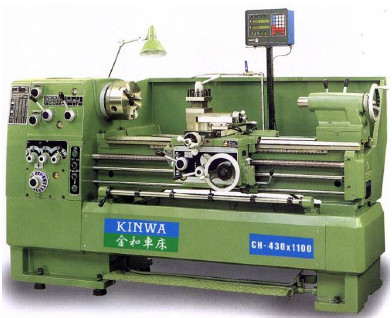
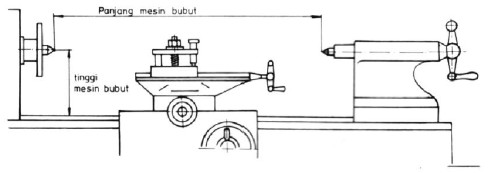
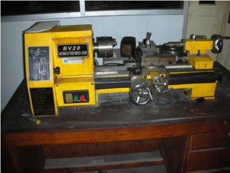
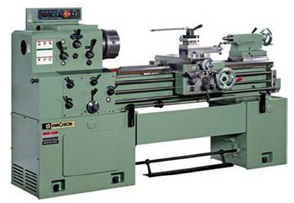
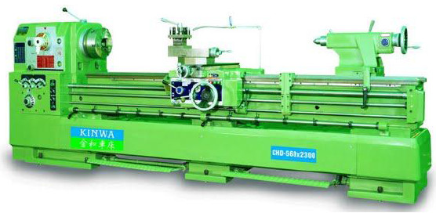
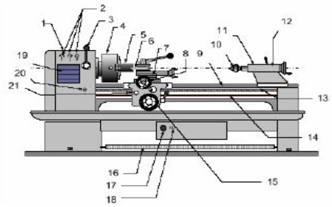

Dasar Proses Pembubutan
Tujuan
Peserta dapat menjelaskan dasar proses pembubutan
Waktu
4 jam

http://www.machinerycanada.com/kinwa%20small.jpg
Gambar 1 gambar mesin bubut
Jenis- jenis Mesin Bubut
Untuk melihat jenis dari mesin bubut kita bisa melihat ukuran panjang dari mesin bubut berikut ini.

http://3.bp.blogspot.com/_rBW4f65vMDg/SdR7EOFIQTI/AAAAAAAAAFM/YSsdAcQiKXo/s1600/31.png
Gambar 2 Ukuran Mesin Bubut
Mesin Bubut Ringan
Mesin bubut ringan dapat diletakkan di atas meja dan mudah dipindahkan sesuai dengan kebutuhan, benda kerjanya berdimensi kecil (mini). Jenis ini umumnya digunakan untuk membubut benda-benda kecil dan biasanya dipergunakan untuk industri rumah tangga (home industri). Panjangnya mesin umumnya tidak lebih dari 1200 mm, dan karena bebanya ringan dapat diangkat oleh satu orang.

http://kriboasyik.files.wordpress.com/2011/10/mesin_bubut_2.jpg
Gambar 3 Mesin Bubut Ringan
Mesin Bubut Sedang
Jenis mesin bubut sedang dapat membubut diameter benda kerja sampai dengan 200 mm dan panjang sampai dengan 100 mm cocok untuk industri kecil atau bengkel-bengkel perawatan dan pembuatan komponen. Umumnya digunakan pada dunia pendidikan atau pusat pelatihan, karena harganya terjangkau dan mudah dioperasikan.

http://2.bp.blogspot.com/-iEvB3bMagZ8/Tco8jHcB92I/AAAAAAAAAAY/tkPf_Axqt8Q/s1600/mesin+bubut.jpg
Gambar 4 Mesin Bubut Sedang
Mesin Bubut Standar
Jenis mesin bubut mesin bubut standar disebut sebagai mesin bubut standar karena disamping memiliki komponen seperti pada mesin ringan dan sedang juga telah dilengkapi berbagai kelengkapan tambahan yaitu keran pendingin, lampu kerja, bak penampung beram dan rem untuk menghentikan mesin dalam keadaan darurat.

http://www.kinwa-lathe.com/_/rsrc/1309864073518/home/product_c/CHD-560.jpg?height=299&width=600
Gambar 5 Mesin Bubut Standar
Bagian-bagian Utama Mesin Bubut
Secara umum, sebuah mesin bubut terdiri dari empat bagian utama, yaitu kepala tetap, kepala lepas, eretan dan alas mesin. Keempat bagian utama mesin bubut tersebut dapat dilihat pada gambar berikut:

Gambar 6 Mesin bubut dengan bagian-bagian utamanya
Keterangan:
1. Head stock
2. Knob pengatur kecepatan putaran
3. Handle pengatur putaran
4. Chuck
5. Benda kerja
6. Pahat (tool)
7. Tool post dan eretan atas
8. Eretan lintang
9. Bed Mesin
10. Senter jalan
11. Tail stock
12. Pengunci barel
13. Lead screw
14. Feeding shaft
15. Roda pemutar/penggerak eretan memanjang
16. Rem mesin
17. Main swich
18. Coolant motor switch
19. Tabel Mesin
20. Pengatur arah feeding shaft
21. Handle lead screw